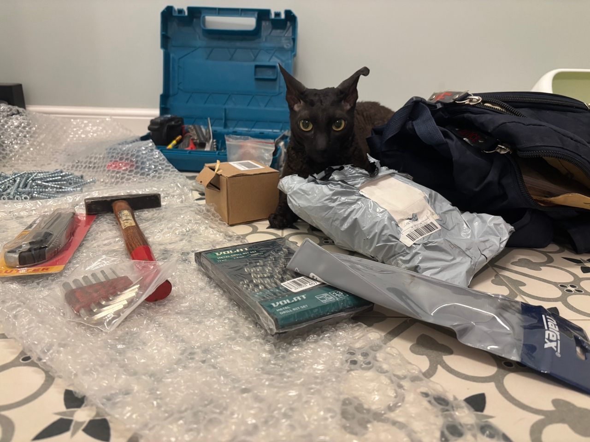
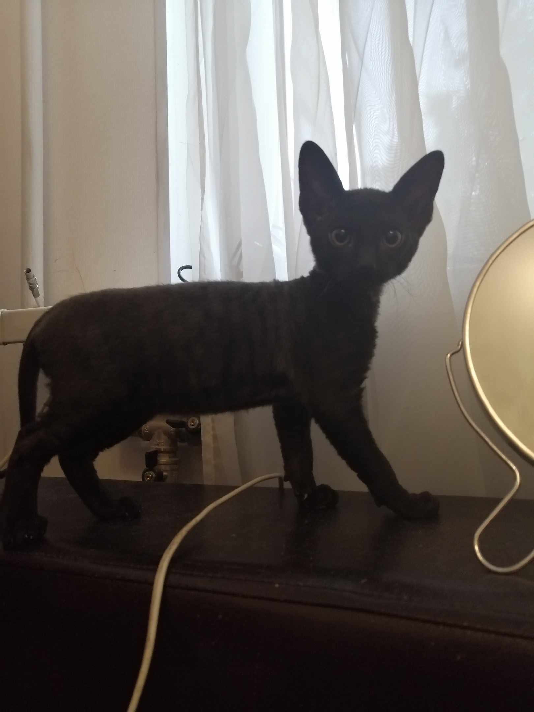
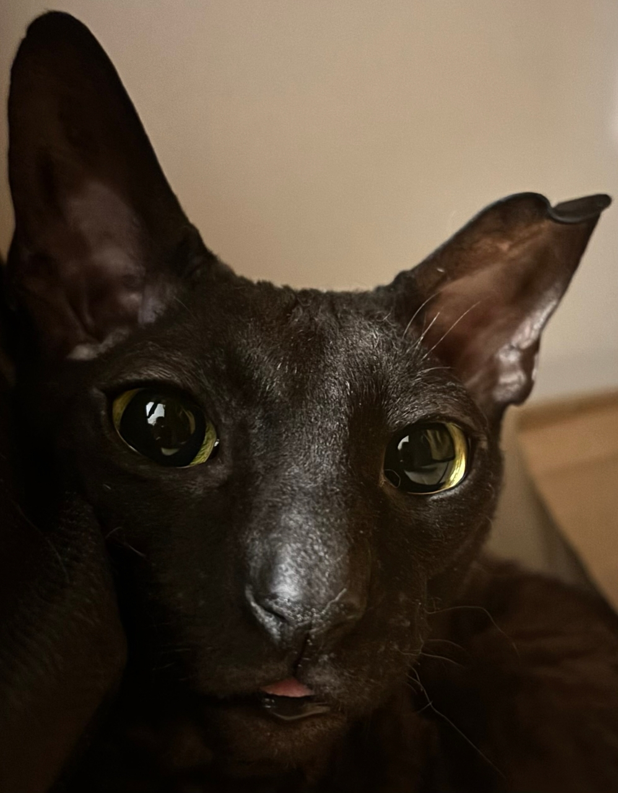
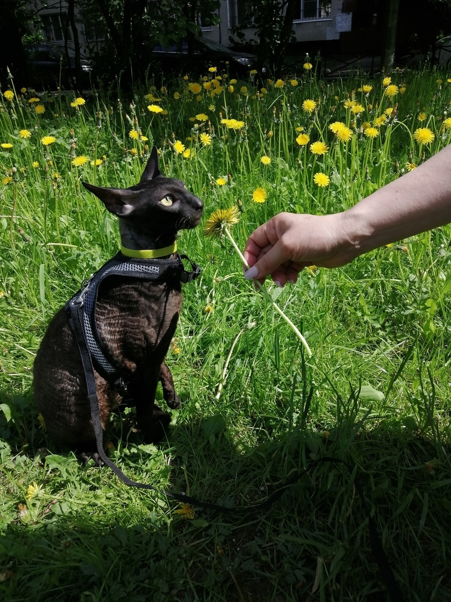
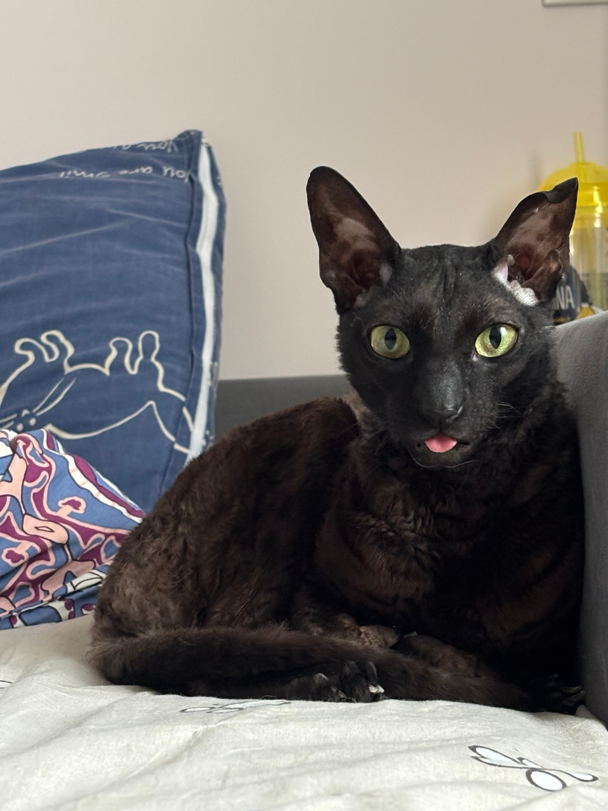
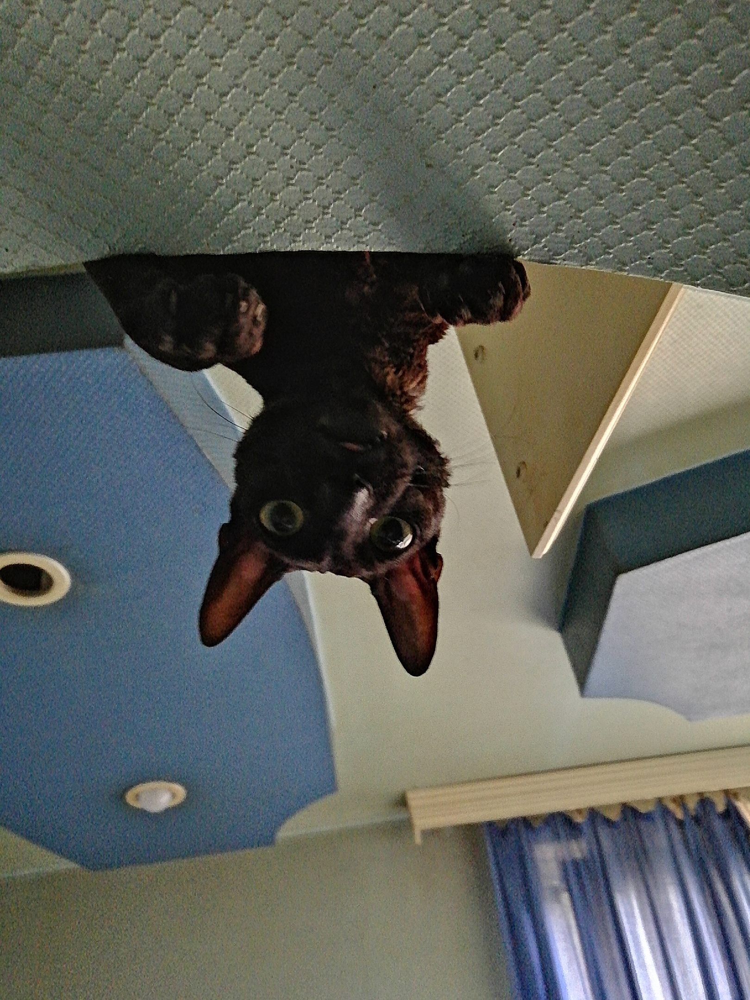
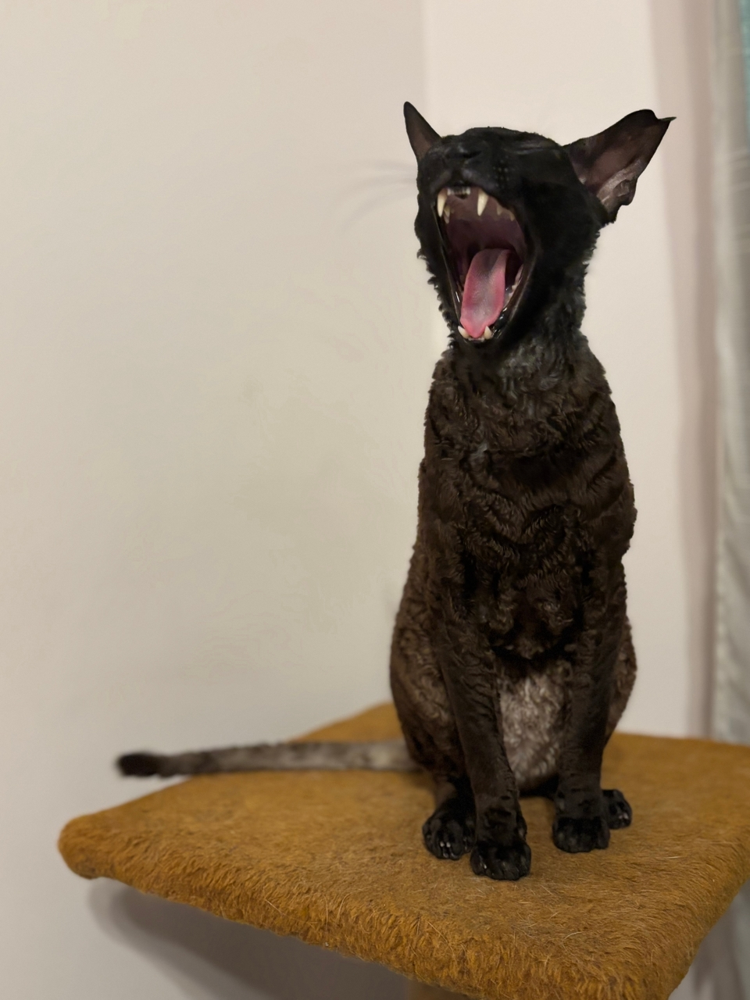
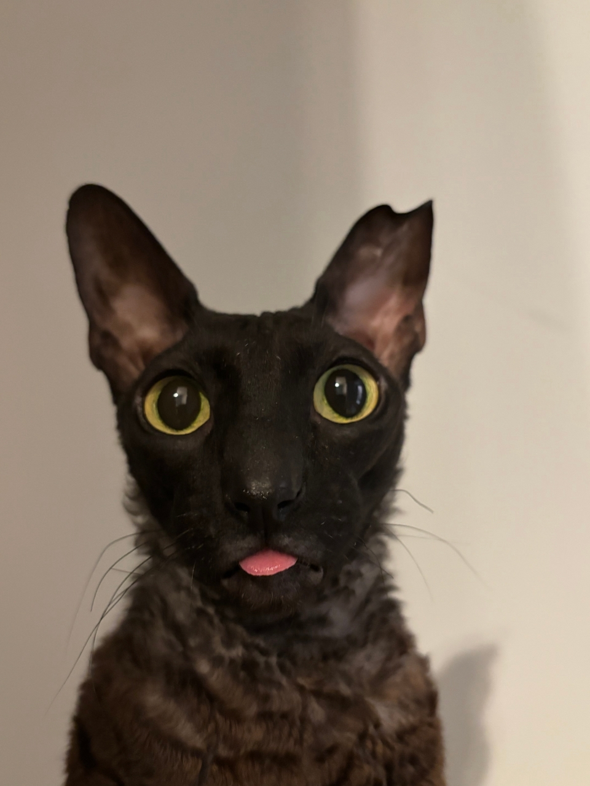

Фритрек и нулевой спринт: Подготовка к работе

Это было самое начало пути. На этом этапе важно было проникнуться основами и настроиться на учёбу. И, возможно, подумать, как новые знания могут повлиять на ваше будущее.
Было сложно включиться в работу.
1 спринт: Я — чистый лист

На первых этапах мы работали со страхами и сомнениями, которые часто испытывают новички. Один из них — страх перед чистым листом. Это, конечно же, намного сложнее, чем боязнь куска бумаги. Часто за этим ощущением скрываются более глубокие вопросы: с чего начать? а вдруг будет слишком сложно? что, если я не справлюсь?
Было и правда страшно что не справлюсь(хотя и сейчас этот страх все еще остался). Также было очень сложно рганизовать учебный процесс, не понимаю как все же вести конспекты и успевать проходить весь курс, иногда очень тяжело заставить себя сесть за учебу.
1 спринт: А если не получится?

Первый проект — позади! Но это всё ещё самое начало пути. Радость могла быстро померкнуть и смениться ожиданием провала. Или вы, наоборот, могли вдохновиться успехами и поверить в себя.
Когда приняли первую работу было очень радостно. Но как только началсявторой спринт, уверенность сразу пропала и опять появился страх того что еще слишком много всего надо узнать, а не факт что получится.
2 спринт: Погоня за идеалом

На этом этапе вы уже достаточно разбирались в основах вёрстки, чтобы понять, как много ещё впереди. Вы могли попытаться погнаться за идеалом и понять, что он недостижим. А, может, вы вовсе и не подвержены перфекционизму и вместо того, чтобы сделать идеально, старались просто сделать.
Было не очень. Переход из пачки в яндекс мессенджер, что совсем не радовало. Смена наставника, что тоже не радовало. Группа из разных кагорт, что не нравилось и не нравитсядо сих пор.
2 спринт: О тех, кто рядом

Всё это время вы были не одиноки (хотя, возможно, иногда и чувствовали, что одни против целого мира). Вас окружали одногруппники, команда сопровождения и просто близкие люди, которым можно пожаловаться, если очередной макет просто так не поддавался. Осваивать что-то новое легче, когда рядом есть единомышленники, не правда ли?
Мне нравится что наставники отвечают на вопросы в чате. Но у нас два раза отменяли QNA из-за "нехватки вопросов". Просто бред какой-то. Может большенству это и не надо, но есть те кому нужны такие созвоны, ведь вопросы могут появляться и по ходу объяснений. Отвечать на вопросы в чате это здорово конечно, но спросить почти в живую, чтоб тебе объяснили и ты мог еще уточнять и спрашивать это другое. Пока нас не объединили (все кагорты вместе) у нас небыло такого чтоб отменяли созвон, а тут пропал пусть и не индивидуальный подход, но более приватный чтоли. Просто куча людей и у меня иногда скадывается ощущение что это просто нафиг никому не надо, так стало неприятнее учиться.
3 спринт: Обходные стратегии

На этом курсе вы постоянно решали разные задачи. В какой-то момент вам могло показаться, что решения просто иссякли. Значит, пришло время посмотреть на задачу под другим углом.
3 спринт показался самым ужасным, да и проектную работу было сложнее всего делать, тк до этого были более подробные шаги по выполнению. Плюс отмененный QNA оставил много вопросов, а писать и спрашивать в чате не комфортно/ не удобно/ не нравится. Соответственно для меня 3 спринт был самый стресовый и негативный.
3 спринт: Когда опускаются руки

Во время учёбы часто возникает чувство, когда не знаешь, за что хвататься. Вроде и проектную пора сдавать, и задачи хочется порешать, и в теории получше разобраться, и жизнь не забыть пожить. В такие моменты очень нужна концентрация. Вспомните, откуда вы её черпали.
С концентрацией в 3 спринте так раз были проблемы, читаешь, а информация просто до тебя не доходит. Приходилось перечитывать одно и тоже снова и снова, в общем не очень было
«Сейчас я здесь»

Сейчас вы уже очень много знаете о вёрстке. Но это только начало. Во-первых, впереди ещё много материала про «красотищу». Во-вторых, с окончанием курса учёба не заканчивается. Вёрстка — это целый мир. И этот мир постоянно меняется. Познать его полностью не получится, но это тот случай, когда важен сам процесс познания. Ведь часто путь — и есть результат.
Чувствую что немного растеряна. Как будто здесь не все еще улеглось в голове, как будто много не запомнилось, и как закрепить то что запомнилось не понимаю. А дальше все будет сложнее и сложнее как будто, так что есть чувство растеренности.